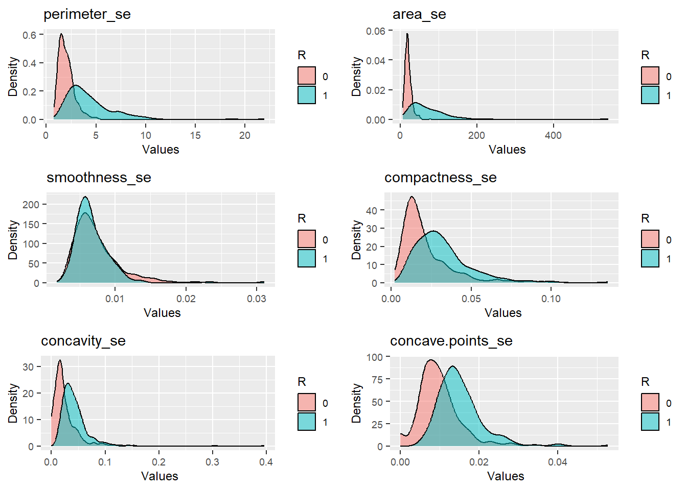
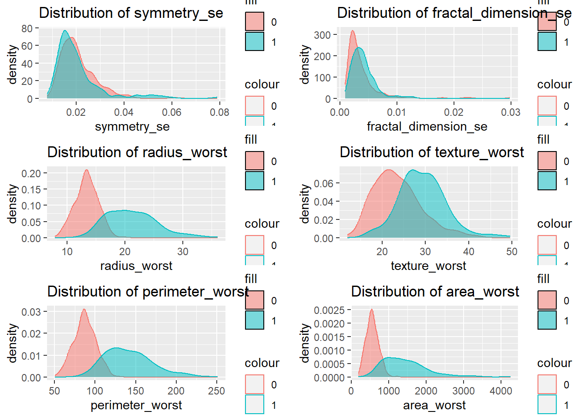
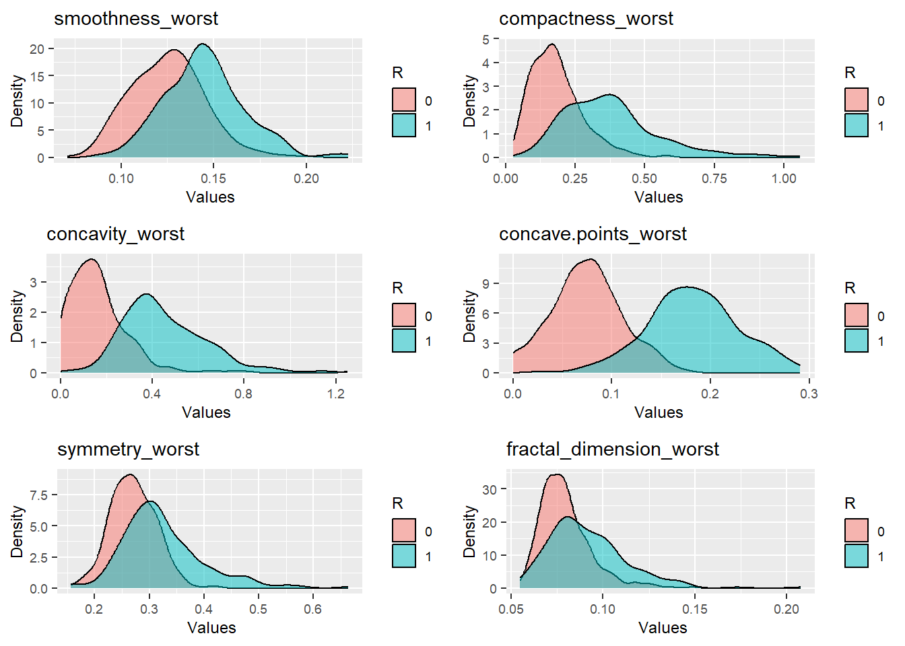

Introduction
The goal of this project is to analyze spatial data summarizing the
number of acidents in New york. The objective is to create a heat map
where every zip code shows the number of car accidents.
The information base of this analysis comes from a dataset found in
Kaggle that provides differents
Data
data<-read.csv("C:/Users/dsaav/Documents/Projects/Datasets/Breast Cancer Prediction/data.csv",header = TRUE)
sum(is.na(data$ZI))
for (i in 1:ncol(data)){
print(paste(colnames(data)[i],"=", sum(is.na(data[,i]))))
}
## [1] "diagnosis = 0"
## [1] "radius_mean = 0"
## [1] "texture_mean = 0"
## [1] "perimeter_mean = 0"
## [1] "area_mean = 0"
## [1] "smoothness_mean = 0"
## [1] "compactness_mean = 0"
## [1] "concavity_mean = 0"
## [1] "concave.points_mean = 0"
## [1] "symmetry_mean = 0"
## [1] "fractal_dimension_mean = 0"
## [1] "radius_se = 0"
## [1] "texture_se = 0"
## [1] "perimeter_se = 0"
## [1] "area_se = 0"
## [1] "smoothness_se = 0"
## [1] "compactness_se = 0"
## [1] "concavity_se = 0"
## [1] "concave.points_se = 0"
## [1] "symmetry_se = 0"
## [1] "fractal_dimension_se = 0"
## [1] "radius_worst = 0"
## [1] "texture_worst = 0"
## [1] "perimeter_worst = 0"
## [1] "area_worst = 0"
## [1] "smoothness_worst = 0"
## [1] "compactness_worst = 0"
## [1] "concavity_worst = 0"
## [1] "concave.points_worst = 0"
## [1] "symmetry_worst = 0"
## [1] "fractal_dimension_worst = 0"
Main Statistics
summary(data)
## diagnosis radius_mean texture_mean perimeter_mean
## Min. :0.0000 Min. : 6.981 Min. : 9.71 Min. : 43.79
## 1st Qu.:0.0000 1st Qu.:11.700 1st Qu.:16.17 1st Qu.: 75.17
## Median :0.0000 Median :13.370 Median :18.84 Median : 86.24
## Mean :0.3726 Mean :14.127 Mean :19.29 Mean : 91.97
## 3rd Qu.:1.0000 3rd Qu.:15.780 3rd Qu.:21.80 3rd Qu.:104.10
## Max. :1.0000 Max. :28.110 Max. :39.28 Max. :188.50
## area_mean smoothness_mean compactness_mean concavity_mean
## Min. : 143.5 Min. :0.05263 Min. :0.01938 Min. :0.00000
## 1st Qu.: 420.3 1st Qu.:0.08637 1st Qu.:0.06492 1st Qu.:0.02956
## Median : 551.1 Median :0.09587 Median :0.09263 Median :0.06154
## Mean : 654.9 Mean :0.09636 Mean :0.10434 Mean :0.08880
## 3rd Qu.: 782.7 3rd Qu.:0.10530 3rd Qu.:0.13040 3rd Qu.:0.13070
## Max. :2501.0 Max. :0.16340 Max. :0.34540 Max. :0.42680
## concave.points_mean symmetry_mean fractal_dimension_mean radius_se
## Min. :0.00000 Min. :0.1060 Min. :0.04996 Min. :0.1115
## 1st Qu.:0.02031 1st Qu.:0.1619 1st Qu.:0.05770 1st Qu.:0.2324
## Median :0.03350 Median :0.1792 Median :0.06154 Median :0.3242
## Mean :0.04892 Mean :0.1812 Mean :0.06280 Mean :0.4052
## 3rd Qu.:0.07400 3rd Qu.:0.1957 3rd Qu.:0.06612 3rd Qu.:0.4789
## Max. :0.20120 Max. :0.3040 Max. :0.09744 Max. :2.8730
## texture_se perimeter_se area_se smoothness_se
## Min. :0.3602 Min. : 0.757 Min. : 6.802 Min. :0.001713
## 1st Qu.:0.8339 1st Qu.: 1.606 1st Qu.: 17.850 1st Qu.:0.005169
## Median :1.1080 Median : 2.287 Median : 24.530 Median :0.006380
## Mean :1.2169 Mean : 2.866 Mean : 40.337 Mean :0.007041
## 3rd Qu.:1.4740 3rd Qu.: 3.357 3rd Qu.: 45.190 3rd Qu.:0.008146
## Max. :4.8850 Max. :21.980 Max. :542.200 Max. :0.031130
## compactness_se concavity_se concave.points_se symmetry_se
## Min. :0.002252 Min. :0.00000 Min. :0.000000 Min. :0.007882
## 1st Qu.:0.013080 1st Qu.:0.01509 1st Qu.:0.007638 1st Qu.:0.015160
## Median :0.020450 Median :0.02589 Median :0.010930 Median :0.018730
## Mean :0.025478 Mean :0.03189 Mean :0.011796 Mean :0.020542
## 3rd Qu.:0.032450 3rd Qu.:0.04205 3rd Qu.:0.014710 3rd Qu.:0.023480
## Max. :0.135400 Max. :0.39600 Max. :0.052790 Max. :0.078950
## fractal_dimension_se radius_worst texture_worst perimeter_worst
## Min. :0.0008948 Min. : 7.93 Min. :12.02 Min. : 50.41
## 1st Qu.:0.0022480 1st Qu.:13.01 1st Qu.:21.08 1st Qu.: 84.11
## Median :0.0031870 Median :14.97 Median :25.41 Median : 97.66
## Mean :0.0037949 Mean :16.27 Mean :25.68 Mean :107.26
## 3rd Qu.:0.0045580 3rd Qu.:18.79 3rd Qu.:29.72 3rd Qu.:125.40
## Max. :0.0298400 Max. :36.04 Max. :49.54 Max. :251.20
## area_worst smoothness_worst compactness_worst concavity_worst
## Min. : 185.2 Min. :0.07117 Min. :0.02729 Min. :0.0000
## 1st Qu.: 515.3 1st Qu.:0.11660 1st Qu.:0.14720 1st Qu.:0.1145
## Median : 686.5 Median :0.13130 Median :0.21190 Median :0.2267
## Mean : 880.6 Mean :0.13237 Mean :0.25427 Mean :0.2722
## 3rd Qu.:1084.0 3rd Qu.:0.14600 3rd Qu.:0.33910 3rd Qu.:0.3829
## Max. :4254.0 Max. :0.22260 Max. :1.05800 Max. :1.2520
## concave.points_worst symmetry_worst fractal_dimension_worst
## Min. :0.00000 Min. :0.1565 Min. :0.05504
## 1st Qu.:0.06493 1st Qu.:0.2504 1st Qu.:0.07146
## Median :0.09993 Median :0.2822 Median :0.08004
## Mean :0.11461 Mean :0.2901 Mean :0.08395
## 3rd Qu.:0.16140 3rd Qu.:0.3179 3rd Qu.:0.09208
## Max. :0.29100 Max. :0.6638 Max. :0.20750
dim(data)
## [1] 569 31
str(data)
## 'data.frame': 569 obs. of 31 variables:
## $ diagnosis : int 1 1 1 1 1 1 1 1 1 1 ...
## $ radius_mean : num 18 20.6 19.7 11.4 20.3 ...
## $ texture_mean : num 10.4 17.8 21.2 20.4 14.3 ...
## $ perimeter_mean : num 122.8 132.9 130 77.6 135.1 ...
## $ area_mean : num 1001 1326 1203 386 1297 ...
## $ smoothness_mean : num 0.1184 0.0847 0.1096 0.1425 0.1003 ...
## $ compactness_mean : num 0.2776 0.0786 0.1599 0.2839 0.1328 ...
## $ concavity_mean : num 0.3001 0.0869 0.1974 0.2414 0.198 ...
## $ concave.points_mean : num 0.1471 0.0702 0.1279 0.1052 0.1043 ...
## $ symmetry_mean : num 0.242 0.181 0.207 0.26 0.181 ...
## $ fractal_dimension_mean : num 0.0787 0.0567 0.06 0.0974 0.0588 ...
## $ radius_se : num 1.095 0.543 0.746 0.496 0.757 ...
## $ texture_se : num 0.905 0.734 0.787 1.156 0.781 ...
## $ perimeter_se : num 8.59 3.4 4.58 3.44 5.44 ...
## $ area_se : num 153.4 74.1 94 27.2 94.4 ...
## $ smoothness_se : num 0.0064 0.00522 0.00615 0.00911 0.01149 ...
## $ compactness_se : num 0.049 0.0131 0.0401 0.0746 0.0246 ...
## $ concavity_se : num 0.0537 0.0186 0.0383 0.0566 0.0569 ...
## $ concave.points_se : num 0.0159 0.0134 0.0206 0.0187 0.0188 ...
## $ symmetry_se : num 0.03 0.0139 0.0225 0.0596 0.0176 ...
## $ fractal_dimension_se : num 0.00619 0.00353 0.00457 0.00921 0.00511 ...
## $ radius_worst : num 25.4 25 23.6 14.9 22.5 ...
## $ texture_worst : num 17.3 23.4 25.5 26.5 16.7 ...
## $ perimeter_worst : num 184.6 158.8 152.5 98.9 152.2 ...
## $ area_worst : num 2019 1956 1709 568 1575 ...
## $ smoothness_worst : num 0.162 0.124 0.144 0.21 0.137 ...
## $ compactness_worst : num 0.666 0.187 0.424 0.866 0.205 ...
## $ concavity_worst : num 0.712 0.242 0.45 0.687 0.4 ...
## $ concave.points_worst : num 0.265 0.186 0.243 0.258 0.163 ...
## $ symmetry_worst : num 0.46 0.275 0.361 0.664 0.236 ...
## $ fractal_dimension_worst: num 0.1189 0.089 0.0876 0.173 0.0768 ...
data$diagnosis<-factor(data$diagnosis)
Data Visualization
library(gridExtra)
library(stringr)
library(ggplot2)
# Assign the columns of interest to a variable
#target_variables <- colnames(data)[2:7]
mulplot<-function(df,vars){
my_plots_list <-lapply(vars, function(each_variable) {
ggplot(df, aes_string(each_variable,fill=data$diagnosis)) + # NOTE - aes_string rather than aes
geom_density(alpha = 0.5,linetype = 1) +ggtitle(str_c(each_variable))+
theme(text=element_text(size = 9),legend.key.size = unit(0.5, 'cm'))+
labs(x = " Values", y = "Density",fill='R')
})
gridExtra::grid.arrange(grobs = my_plots_list, ncol = 2,widths=c(10,10))
}
mulplot(data,colnames(data)[2:7])

mulplot(data,colnames(data)[8:13])

mulplot(data,colnames(data)[14:19])

mulplot(data,colnames(data)[20:25])

mulplot(data,colnames(data)[26:31])
